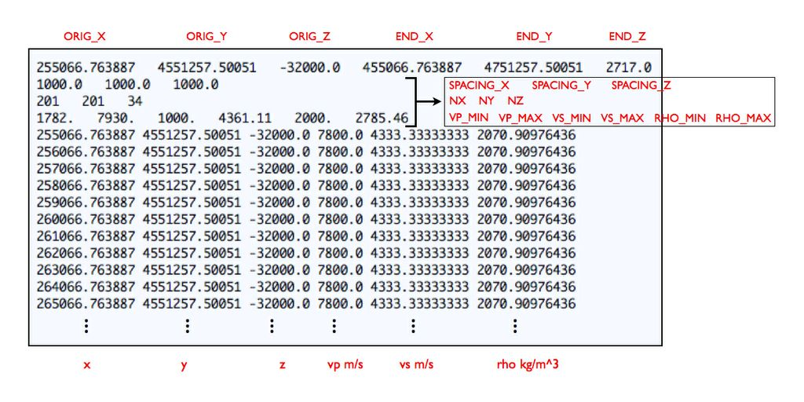

Table of Contents
Changing the Model
In this section we explain how to change the velocity model used for your simulations. These changes involve contributing specific subroutines that replace existing subroutines in the SPECFEM3D Cartesian package. Note that SPECFEM3D Cartesian can handle Earth models with material properties that vary within each spectral element.
Using external tomographic Earth models
To implement your own external tomographic model(s), you must provide your own external tomography file(s), and choose between two possible options:
(1) set in the Par_file the model parameter MODEL = tomo,
or for more user control:
(2) set in the Par_file the model parameter MODEL = default, define the negative material_ID identifier for each element in the file MESH/materials_file and use the following format in the file MESH/nummaterial_velocity_file when using CUBIT to construct your mesh (see also section [subsec:Exporting-the-Mesh]):
domain_ID material_ID tomography elastic file_name 1
where:
domain_ID is 1 for acoustic or 2 for elastic materials,
material_ID a negative, unique identifier (i.e., -1,-2,…),
tomography keyword for tomographic material definition,
elastic keyword for elastic material definition,
file_name the name of the tomography file and 1 a positive unique identifier.
The external tomographic model is represented by a grid of points with assigned material properties and homogeneous resolution along each spatial direction x, y and z. The ASCII file file_name that describe the tomography should be located in the TOMOGRAPHY_PATH directory, set in the Par_file. The format of the file, as read from model_tomography.f90 located in the src/generate_databases directory, looks like Figure [fig:tomographyfile], starting with a header information where
ORIG_X, END_X
are, respectively, the coordinates of the initial and final tomographic grid points along the x direction (in the mesh units, e.g., (m));
ORIG_Y, END_Y
respectively the coordinates of the initial and final tomographic grid points along the y direction (in the mesh units, e.g., (m));
ORIG_Z, END_Z
respectively the coordinates of the initial and final tomographic grid points along the z direction (in the mesh units, e.g., (m));
SPACING_X, SPACING_Y, SPACING_Z
the spacing between the tomographic grid points along the x, y and z directions, respectively (in the mesh units, e.g., (m));
NX, NY, NZ
the number of grid points along the spatial directions x, y and z, respectively; NX is given by [(END_X - ORIG_X)/SPACING_X]+1; NY and NZ are the same as NX, but for the y and z directions, respectively;
VP_MIN, VP_MAX, VS_MIN, VS_MAX, RHO_MIN, RHO_MAX
the minimum and maximum values of the wave speed vp and vs (in (m\, s^{-1})) and of the density rho (in (kg\, m^{-3})); these values could be the actual limits of the tomographic parameters in the grid or the minimum and maximum values to which we force the cut of velocity and density in the model.
After the first four lines, the tomography file file_name lists the data record where all tomographic grid points are listed with the corresponding values of vp, vs and rho (and optionally (Q_{p}) and (Q_{s})), scanning the grid along the x coordinate (from ORIG_X to END_X with step of SPACING_X) for each given y (from ORIG_Y to END_Y, with step of SPACING_Y) and each given z (from ORIG_Z to END_Z, with step of SPACING_Z).
Each data record line provides the velocity model values in a format like:
# data record format: purely isotropic model
x y z vp vs rho
..
or
# data record format: anelastic isotropic model
x y z vp vs rho Qp Qs
..
where x, y, z are the grid point position, vp, vs and rho the P- and S-wave speeds and density, and Qp and Qs the quality factors for P- and S-wave speeds. The quality factors are optional and can be omitted for purely elastic models (the tomography routine will recognize both formats). Internally, the quality factors will be converted to bulk and shear attenuation values, (Q_{\kappa}) and (Q_{\mu}) respectively (Anderson and Hart 1978). Note that Qmu is always equal to Qs, but Qkappa is in general not equal to Qp. To convert one to the other see doc/note_on_Qkappa_versus_Qp.pdf and utils/attenuation/conversion_from_Qkappa_Qmu_to_Qp_Qs_from_Dahlen_Tromp_959_960.f90. For simulations with attenuation, please note that the Vp- and Vs-velocities of your model are given for a reference frequency. To change this reference frequency, you change the value of ATTENUATION_f0_REFERENCE in the main constants file constants.h found in subdirectory src/shared/.
The code uses a constant (Q) quality factor, write(IMAIN,*) “but approximated based on a series of Zener standard linear solids (SLS). The approximation is thus performed in a given frequency band determined based on that ATTENUATION_f0_REFERENCE reference frequency.

The user can implement his own interpolation algorithm for the tomography model by changing the routine model_tomography.f90 located in the src/generate_databases/ directory. Moreover, for models that involve both fully defined materials and a tomography description, the nummaterial_velocity_file has multiple lines each with the corresponding suitable format described above.
Example: External tomography file with variable discretization intervals
The example in Figure [fig:tomographyfile] is for an external tomography file with uniform spacing in the (x), (y), and (z) directions. (Note that (\Delta x), (\Delta y), and (\Delta z) need not be the same as in the example.) In that example, the nummaterial_velocity_file is
2 -1 tomography elastic tomography_model.xyz 1
and the file tomography_model.xyz will need to reside in DATA/. All entries in the second column of materials_file will be -1, which means that each element in the mesh will be interpolated according to the values in tomography_model.xyz.
In some cases it may be desirable to have an external tomography model that is described in more than one file. For example, in cases like southern California, the length scale of variation in the structure of the wave speed model is much shorter in the sedimentary basin models within the upper 15 km. Therefore one might want to use an external tomography file that is sampled with, say, (\Delta x = 1000) m, (\Delta y = 1000) m, and (\Delta z = 250) m in the uppermost 15 km, and then use (\Delta x = 2000) m, (\Delta y = 2000) m, and (\Delta z = 1000) m below a depth of 15 km. If these intervals are chosen appropriately, then it will result in a pair of external tomography file that is much smaller than the alternative of having a single file with the fine discretization. In this case nummaterial_velocity_file is
2 -1 tomography elastic file_above_15km.xyz 1
2 -2 tomography elastic file_below_15km.xyz 1
and the files file_above_15km.xyz and file_below_15km.xyz will need to reside in DATA/. All entries in the second column of materials_file will need to be either -1 or -2, depending on whether the element is above or below 15 km depth. In this sense, the construction of the mesh and the discretization of the external model will generally be done in tandem.
Other more complicated discretizations can be used following the same procedure. (In particular, there is no limit on the number of different external files that are used.)
External (an)elastic Models
To use your own external model, you can set in the Par_file the model parameter MODEL = external. Three-dimensional acoustic and/or (an)elastic (attenuation) models may then be superimposed onto the mesh based upon your subroutine in model_external_values.f90 located in directory src/generate_databases. The call to this routine would be as follows
call model_external_values(xmesh, ymesh, zmesh, &
rho, vp, vs, qkappa_atten, qmu_atten, iflag_aniso, idomain_id)
Input to this routine consists of:
xmesh,ymesh,zmesh
location of mesh point
Output to this routine consists of:
rho,vp,vs
isotropic model parameters for density (\rho) ((kg/m^{3})), (v_{p}) ((m/s)) and (v_{s}) ((m/s))
qkappa_atten,qmu_atten
Bulk and shear wave quality factor: (0<Q_{\kappa,\mu}<9000). Note that Qmu is always equal to Qs, but Qkappa is in general not equal to Qp. To convert one to the other see doc/note_on_Qkappa_versus_Qp.pdf and utils/attenuation/conversion_from_Qkappa_Qmu_to_Qp_Qs_from_Dahlen_Tromp_959_960.f90.
iflag_aniso
anisotropic model flag, (0) indicating no anisotropy or (1) using anisotropic model parameters as defined in routine file model_aniso.f90
idomain_id
domain identifier, (1) for acoustic, (2) for elastic, (3) for poroelastic materials.
Note that the resolution and maximum value of anelastic models are truncated. This speeds the construction of the standard linear solids during the meshing stage. To change the resolution, currently at one significant figure following the decimal, or the maximum value (9000), consult shared/constants.h.
Anisotropic Models
To use your anisotropic models, you can either set in the Par_file the model parameter ANISOTROPY to .true. or set the model parameter MODEL = aniso. Three-dimensional anisotropic models may be superimposed on the mesh based upon the subroutine in file model_aniso.f90 located in directory src/generate_databases. The call to this subroutine is of the form
call model_aniso(iflag_aniso, rho, vp, vs, &
c11,c12,c13,c14,c15,c16,c22,c23,c24,c25,c26, &
c33,c34,c35,c36,c44,c45,c46,c55,c56,c66)
Input to this routine consists of:
iflag_aniso
flag indicating the type of the anisotropic model, i.e. (0) for no superimposed anisotropy, (1) or (2) for generic pre-defined anisotropic models.
rho,vp,vs
reference isotropic model parameters for density (\rho), (v_{p}) and (v_{s}).
Output from the routine consists of the following non-dimensional model parameters:
c11,..,c66
21 dimensionalized anisotropic elastic parameters.
You can replace the model_aniso.f90 file by your own version provided you do not change the call structure of the routine, i.e., the new routine should take exactly the same input and produce the required relative output.
Using external SEP models
Stanford Exploration Project (SEP) models consists of two files per variables, one header file (.H) and one binary file (.H@). Among other information, the header file indicates, for each dimension, the offset (o1, o2 and o3 fields), the spatial step size (d1, d2 and d3 fields) and the number of samples (n1, n2 and n3) necessary to read the linked binary file (in field).
SEP model reading occurs during database generation. It it the user responsibility to ensure that proper interfaces between acoustic and elastic domains are set up during the meshing phase. For more information, refer to section [cha:Running-the-Mesher-Meshfem3D].
In DATA/Par_file, MODEL should be set to sep, and SEP_MODEL_DIRECTORY should point to wherever your sep model files reside.
Note that in order not to overload the parameter file, SEP header files should be named vp.H, vs.H and rho.H. The in field in these binary files can be any path as long as it is relative to the previously set SEP_MODEL_DIRECTORY. We also assume that any dimensional value inside SEP header files is given in meters and that binary files are single precision floating point numbers stored in little endian format. There is currently only support for vp, vs and rho variables.
An example demonstrating the use SEP models is given in: EXAMPLES/meshfem3D_examples/sep_bathymetry.
References
Anderson, Don L., and R. S. Hart. 1978. “(Q) Of the Earth.” J. Geophys. Res. 83 (B12).
This documentation has been automatically generated by pandoc based on the User manual (LaTeX version) in folder doc/USER_MANUAL/ (Mar 10, 2020)